굴착기 VLA 진행 보고 — NST필드로봇 탐색연구 · 진행 보고굴착기 VLA 적용
기존 모델 분석 → 파인튜닝 → 버킷 이동·굴착 결과
2026.11.12 · 완료된 결과까지
이한민 · hmlee@kimm.re.kr 01
1. 전체 흐름

학습 전 0/72 → 학습 후 시뮬레이터에서 버킷 이동·굴착 네 동작 수행
01모델 이해GR00T N1.7 · π0.5
구조와 입출력
02로봇팔 검증MuJoCo 픽앤플레이스
두 모델 10/10
03굴착기 무학습버킷을 공까지
72회 모두 실패
04버킷 이동 학습검증 위치 6/6
새 위치 4/8 · 6/8
05굴착 학습동작별 3/4
끌기 8/8
연속 굴착 2/2
02
발표자 메모 · 근거
흐름: 모델 이해(구조·입출력) → LIBERO 로봇팔 검증 → HR35 MuJoCo 무학습 시도 → 파인튜닝 계획(방법·APEX 데이터·3단계) → 버킷 이동 학습 결과 → 굴착 학습 결과 → 계획 대비 진행 → 진행 중 과제. 2026-11-12 기준 완료된 결과만 싣는다.
학습 후 수치 근거: docs/execution/results/2026-11-12-numbers.md §1(버킷)·§2(굴착).
수치 근거: LIBERO 10/10 ×2 = runs/models/libero_eval_{gr00t,pi05}/…/review.md · 굴착기 72회 0성공 = docs/research/2026-11-07-vla-excavator-zero-shot-independent-analysis.md §4.
2. GR00T N1.7 — 모델 구성
보고 읽는 시각·언어 모델 + 동작을 그리는 확산 액션 헤드
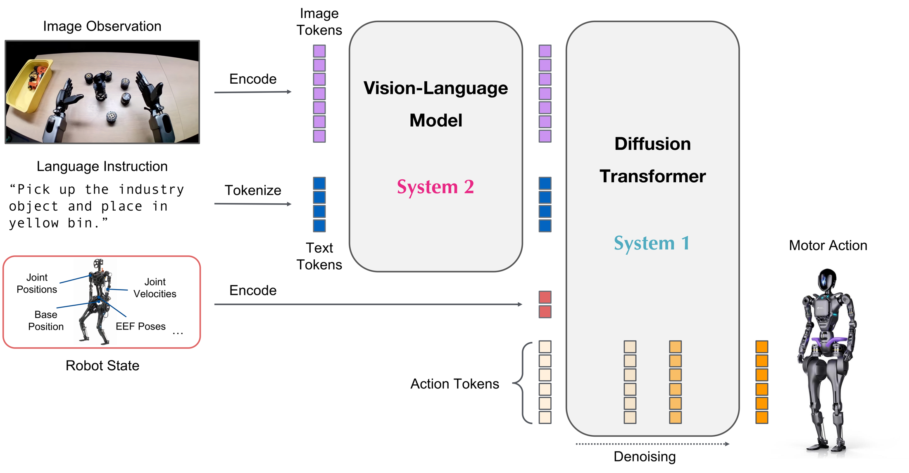
시각·언어 모델 · 2BCosmos-Reason2 · 영상·지시문을 특징으로
확산 액션 헤드 (DiT)잡음에서 행동 묶음을 4단계로 다듬음
로봇별 투영층상태 인코더·행동 디코더 32슬롯 · 로봇마다 교체
그림: NVIDIA Isaac-GR00T 공식 저장소 (Apache-2.0) · github.com/NVIDIA/Isaac-GR00T media/model-architecture.png (N1 계열 공통 그림, N1.7 모델 카드에도 동일 게재)
03
발표자 메모 · 근거
총 3B. 백본 nvidia/Cosmos-Reason2-2B(게이트), 공개 체크포인트 nvidia/GR00T-N1.7-3B. 상태·행동은 키별 1~99 백분위 → [−1,1] 정규화 후 132차원까지 0 패딩. embodiment 태그 → 투영 슬롯(LIBERO 2, new_embodiment 10).
근거: docs/research/2026-11-04-model-io-contract.md §2 (Isaac-GR00T c56f541 코드 읽기). 그림 출처는 하단 표기.
3. π0.5 — 모델 구성
시각·언어 모델 3B가 영상·글을 읽고, 액션 전문가 0.3B가 잡음에서 행동 묶음을 만든다
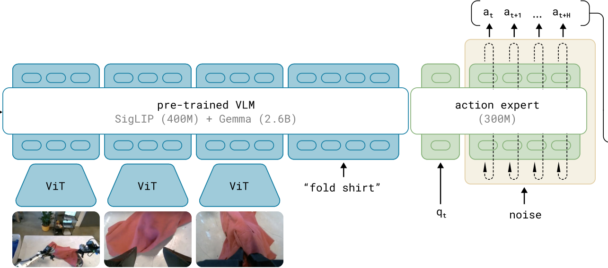
π0 논문 그림 3의 모델 부분 · π0.5도 같은 뼈대, 차이는 상태 qt를 숫자 토큰으로 바꿔 시각·언어 모델 쪽에 넣는 것(π0는 액션 전문가 쪽)과 이산 토큰 사전학습 → 플로우 매칭 후학습의 두 단계시각·언어 모델 · 3BSigLIP 영상 인코더 + Gemma 언어 모델 · 영상 3장 224 + 지시문 (+ π0.5: 상태 토큰)
액션 전문가 · 0.3B잡음에서 시작해 플로우 매칭 10단계로 행동 묶음 at…at+H
상태 qt의 자리π0: 선형층 → 액션 전문가 · π0.5: 256구간 숫자 → 텍스트 토큰 → 언어 모델
그림: Physical Intelligence, π0 논문(arXiv 2410.24164) Fig. 3 모델 부분 잘라냄 · π0.5 논문(arXiv 2504.16054) §IV-A·부록 A-E가 상태 토큰화 근거 · © Physical Intelligence
04
발표자 메모 · 근거
그림은 π0 논문 Fig. 3(overview.png)에서 데이터 혼합·로봇 패널을 빼고 모델 부분만 잘라냈다. π0.5 논문 Fig. 3(assets/arch-pi05.png, 두 단계 학습 개요)은 상태 입력을 그리지 않아 보조로만 둔다.
상태 경로: π0는 q_t를 선형층(state_proj)으로 액션 전문가 토큰열에 넣는다(openpi pi0.py L97, L151–157). π0.5는 상태를 256구간으로 이산화해 "Task: …, State: 12 87 …;" 식 텍스트로 만들어 PaliGemma 언어 모델이 읽는다(pi0_config.py L28–41, tokenizer.py L24–28; 논문 §IV-A "The robot proprioceptive state is discretized and input to the model as text tokens", 부록 A-E, Fig. 18 어텐션 마스크의 State 블록). 공식 pi05_libero 설정은 pi05=True이면서 discrete_state_input=False라 상태를 전혀 받지 않는다(config.py L744–745).
행동 쪽: 잡음 행동 → action_in_proj(선형) → 액션 전문가 → action_out_proj(선형) → 32칸 행동. 시간 단계는 π0.5에서 time_mlp → adaRMSNorm으로 주입. 영상 3슬롯 224×224, 정규화 (x−q01)/(q99−q01)·2−1 클리핑 없음, action_horizon 10(LIBERO)/50(base).
근거: docs/research/2026-11-04-model-io-contract.md §3, openpi 215abfb.
4. 두 모델의 입력과 출력
입력은 영상 + 지시문 (+ 상태) · 출력은 시간 × 7차원 행동 묶음
05
발표자 메모 · 근거
영상 예시는 LIBERO-Spatial 과제 0의 실제 모델 입력 프레임(GR00T 영상에서 잘라냄). 행동 7D = 말단 위치 Δxyz 3 + 회전 3 + 그리퍼 1(LIBERO). GR00T: 16스텝 예측·8스텝 실행, 상태 8D를 투영층으로. π0.5: 10스텝 예측·5스텝 실행, 공식 LIBERO 가중치는 상태 미사용.
근거: docs/research/2026-11-04-model-io-contract.md §2·§3, examples/LIBERO/README.md(두 저장소).
5. 로봇팔 검증 — 픽앤플레이스
같은 과제 10회씩, 두 모델 모두 10/10 · 환경은 MuJoCo
GR00T N1.710 / 10 성공
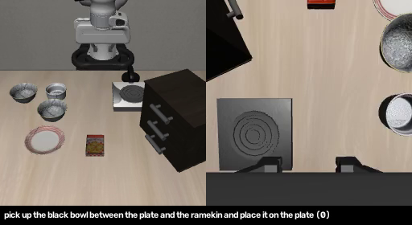
왼쪽 전체 카메라 · 오른쪽 손목 카메라 · 실시간 재생π0.510 / 10 성공
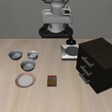
전체 카메라 · 실시간 재생“검은 그릇을 집어 접시에 올려라” · 공식 LIBERO 가중치 · RTX 5080 · 추론 중앙값 80~100 ms
06
발표자 메모 · 근거
LIBERO-Spatial task0 "pick up the black bowl between the plate and the ramekin and place it on the plate". 2026-11-05, RTX 5080(sm_120, 드라이버 595.91.07), bf16.
π0.5: pi05_libero(gs://openpi-assets), openpi 215abfb, seed 7, replan 5, 220스텝 상한, 10/10, p50 97 ms/p95 110 ms, VRAM 최대 11.1 GB. 로그 runs/models/libero_eval_pi05/20261105-091516/.
GR00T: GR00T-N1.7-LIBERO/libero_spatial(rev ), Isaac-GR00T c56f541, seed 7, 8스텝 실행, flash_attention_2, 10/10, p50 80.2 ms/p95 104.9 ms. 로그 runs/models/libero_eval_gr00t/20261105-104348/.
주의: 두 실행의 초기 상태 설정이 달라 같은 초기조건 비교는 아님. 제로샷이 아니라 LIBERO로 미세조정된 공식 가중치. GR00T 영상은 원본 20 fps를 10 fps로 늦춰 실시간에 맞춤.
6. 굴착기에 그대로 연결하기
로봇팔 손끝 이동량을 버킷 끝 이동량으로 읽고 4관절로 푼다
07
발표자 메모 · 근거
MuJoCo 3.3.1, APEX HR35 URDF 변환 모델, 고정 차체, 중력 0, 충돌 끔, 위치 서보 kp100/kv20. 전체 카메라 (6,7,4)→(0,1,1.2) fovy 45°, 붐 카메라 fovy 85°, 640×480. 지시문 "move the bucket toward the orange ball". 7D 출력 중 Δxyz만 ×0.05 m → 축 대응 M → 3×3 국소 역기구학(버킷 피치 유지) → 스윙·붐·암·버킷 절대 목표각, 0.1 s 간격, 50스텝(5 s). 상태: GR00T 버킷 끝 위치·자세 + 가상 그리퍼 2 = 8D, π0.5 미사용.
근거: docs/research/2026-11-07-vla-excavator-zero-shot-independent-analysis.md §3, scripts/simulation/hr35_mujoco/README.md, docs/execution/models/bucket-move-pretrain.md.
7. 연결 자체는 동작한다 — 목표를 아는 제어기
공 위치를 아는 기구학 제어기는 0.95 → 0.01 m 도달 · 모델 없음
전체 카메라
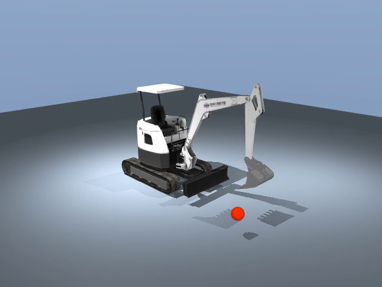
같은 역기구학·같은 서보로 버킷 끝이 공까지붐 카메라
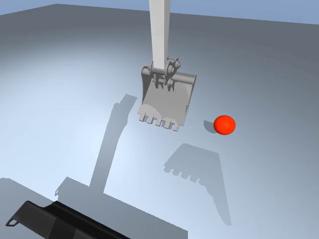
23스텝에 0.5 m 안 · 48스텝에 0.011 m · 모델 없음이 영상은 VLA 결과가 아니다 · “모델이 방향만 맞게 내면 도달 가능”을 보인 기준선
08
발표자 메모 · 근거
오라클(야코비안) 제어기: 목표 좌표를 직접 받아 같은 IK·서보 경로로 구동. target1 0.952 → 0.011 m(23스텝), target2 0.959 → 0.014 m. 영상 runs/media-review-20261105/oracle01/oracle-{overview,boom_view}.mp4. 근거 docs/execution/media/hr35-mujoco-oracle01.md.
의미: 연결층·시뮬레이터·명령 경로는 정상. 실패 원인은 모델 출력 쪽에 있다.
8. 학습 없이 여러 방법을 바꿔 봤지만
72회 시도(표적 보임 54 · 숨김 대조 18) · 0.5 m 안 도달 0회 · 최근접 0.58 m
π0.558회
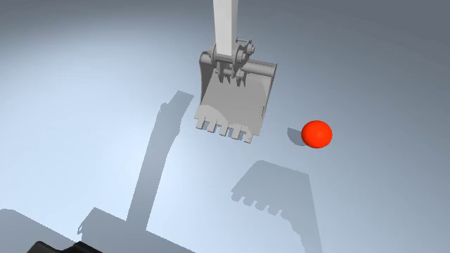
첫 시도0.90 m좌우 축 뒤집기0.79 m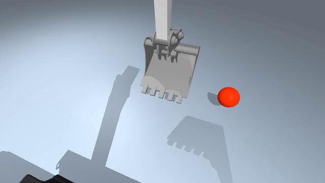
카메라 확대 (45°→34°)0.77 m이동량 2배0.58 mGR00T14회
실제 자세를 상태로0.92 m명령 누적 기준1.02 m카메라 확대 (45°→34°)1.05 m이동량 2배0.94 m같은 표적(공 위치 1) · 붐 카메라 시점 · 숫자는 5초 뒤 버킷 끝~공 거리(시작 0.95 m) · 공통 시도 카메라 확대 · 이동량 2배 · 서보 이득 ↑ · π0.5만 좌우 축 뒤집기 · 5스텝 연속 실행 · 숨긴 공 대조 · GR00T만 상태 종류 · 명령 누적 기준 · 명령 유지 0.2 s
09
발표자 메모 · 근거
붐 카메라 시점(두 시점 영상 중 오른쪽을 잘라냄), 시작 거리 약 0.95 m, 성공 기준 버킷 끝~공 0.5 m. 표시 수치는 해당 에피소드 최종 거리(모두 표적 1).
GR00T 줄: 실제 자세 상태 0.916 m(gpu01/physical_world-target01) · 명령 누적 기준 1.015 m(reference-manual-ssd-runfirst05/target01, 최소 0.919) · 카메라 확대 1.047 m(fovy34-manual-ssd-runfirst01/target01, 최소 0.918) · 이동량 2배 0.942 m(gain2-manual-ssd-runfirst01/target01, 최소 0.917).
π0.5 줄 아래 설명 참고.
π0.5 첫 시도 0.896 m(runs/models/hr35_bridge/20261105-pi05-hr35-target01) · GR00T 실제 자세 상태 0.916 m(hr35_gr00t/gpu01/physical_world-target01) · GR00T 명령 누적 기준 target2 0.864 m(reference-manual-ssd-runfirst05) · π0.5 거울 축 D1/ep0 0.792 m(mirror_v1_attempt9) · π0.5 확대 D1/ep0 0.767 m(r1_fovy) · π0.5 이동량 2배 D1/ep0 0.583 m(gain2). 이 밖에 숨긴 공 대조, 명령 유지 0.2 s, 5스텝 실행, 서보 이득↑ 등도 모두 실패.
집계: 폐루프 72회(보이는 목표 54 + 숨김 대조 18), π 58 / GR 14, 0.5 m 도달 0. 근거 docs/research/2026-11-07-vla-excavator-zero-shot-independent-analysis.md §4·L151–158, runs/models/finite45-results-20261107/media-handoff.json.
9. 중간 결론
파인튜닝 없이 다른 장비에 그대로 쓰는 것은 불가능(이번 시험 범위의 결론) → 데이터와 학습으로
10
발표자 메모 · 근거
그림: 시도별 최종 거리를 0.5 m 기준선과 함께 표시(presentations/vla-experiment-story/build_figures.py 생성본 재사용). 세 가지 원인(독립 분석): ① π 이동량 부족(27회 최대 0.333 m, 필요 0.452 m) ② 두 모델 모두 공 좌우 위치 무시(GR은 매번 약 (−0.13, 0.99, 0.05) 방향) ③ 암 관절이 하한에서 시작해 거부 220건이 모두 암 축. 사용자 합의: 무학습 조정 중단, 파인튜닝으로 전환().
10. 기존 사례 ① Actor Labs — 실제 굴착기에 π0.5
운전자 손을 카메라로 보고 라벨을 만들고, 조이스틱 4축을 행동으로 π0.5를 LoRA 학습
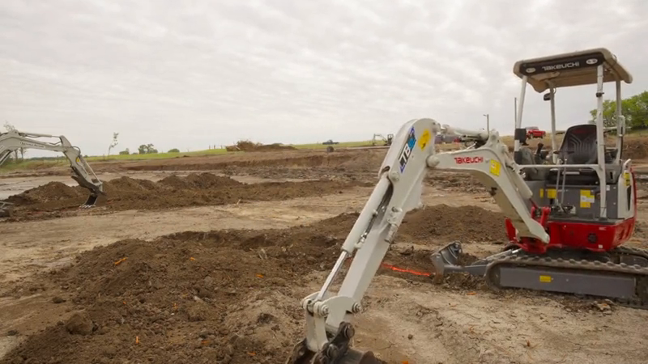
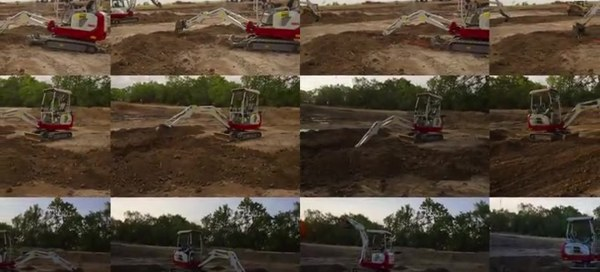
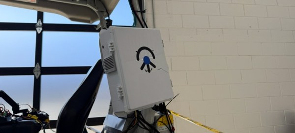
- 데이터
- 운전자가 조이스틱을 조작하는 모습을 운전석 카메라로 촬영하고, YOLO로 스틱 위치를 읽어 행동 라벨(조이스틱 4축 값)을 만듦 · 기계 개조 없는 카메라 키트(15분 설치) · 실내 200 궤적 → 현장 숙련자 2.5시간 · 자체 VR 원격조작 병행
- 입·출력
- 카메라 3대(120°, 720p) + 지시문 (+ 현재 조이스틱 값) → 다음 시점의 조이스틱 위치 4개 [좌x 좌y 우x 우y], 10 Hz · 관절 각도는 쓰지 않음(엔코더 없음) · 분위수 정규화
- 모델·학습
- π0.5 + LoRA 파인튜닝(openpi) · 플로우 매칭 행동 묶음 · 기체 Takeuchi TB20e 전동 미니 굴착기(렌탈) · 추론 Jetson Thor 또는 Starlink 원격, 명령은 CAN 버스
- 결과
- 실제 현장에서 참호 굴착·선회·덤프 자율 수행 영상(실시간) · 맑음·흐림·새벽·야간, 다른 현장에서도 동작했다고 주장 · 60대 이상 기계로 수집 확대
- 한계
- 성공률·사이클 시간·실패 사례 수치 없음(회사 블로그, 성공 장면 모음만) · 힘·부하 피드백 없이 영상만 · 2.5시간이 전체인지 마지막 적응분인지 불명
출처: labs.actor/research/vla-excavator (2026-03-07) · labs.actor/research/excavator-in-the-wild (2026-05-25) · 영상·그림 © Actor Labs
11
발표자 메모 · 근거
Actor Labs(미국 스타트업) 기술 블로그 2편. 1편(2026-03-07, L. Burgett, S. S. Verma 외): 세 장벽(데이터·인터페이스·모델). 데이터: Actor Collector Node — 기계에 계측을 달지 않고 캡 안 카메라로 운전자의 조이스틱 조작을 YOLOv8로 관측해 4D 행동 라벨 생성, 미 전역 다수 기계 배포(Castro Valley CA·Hill City KS 참호 굴착 등), 자체 VR 원격조작·가시선 조작 데이터 병행. 인터페이스: Jetson Thor + CANBUS. 모델: π0.5 LoRA, 다음 조이스틱 상태 직접 예측(영점 문제 우회), 분위수 정규화, 데드존 0.12. 2편(2026-05-25): 숙련 운전자 2.5시간 관찰 → 실제 현장 토공 자율 수행, 조명·장소 적응, 60대 이상 기계 협업, 영상 2개(success-grid, two-scoops)만 게시. 정량 지표·베이스라인·실패 사례 없음.
우리 시사점: 행동 공간을 조이스틱(=우리의 정규화 레버 명령 [−1,1] 4축)으로 둔 점이 APEX 명령 규격과 같다. 사전학습 모델 + 소량 현장 데이터로 동작했다는 주장은 우리의 파인튜닝 경로를 지지하지만 수치가 없어 기대치 산정에는 못 쓴다.
근거: 볼트 02_research/필드로봇/2026 Actor Labs - A VLA Policy for an Excavator_요약.md, 2026 Actor Labs - Excavator in the Wild_요약.md.
11. 기존 사례 ② 상하이교통대 — 시뮬레이터에서 SmolVLA
스크립트 교사 572회 시연으로 SmolVLA를 학습해 한 장면에서 83.5 % · 단, 감독기와 특권 정보 포함
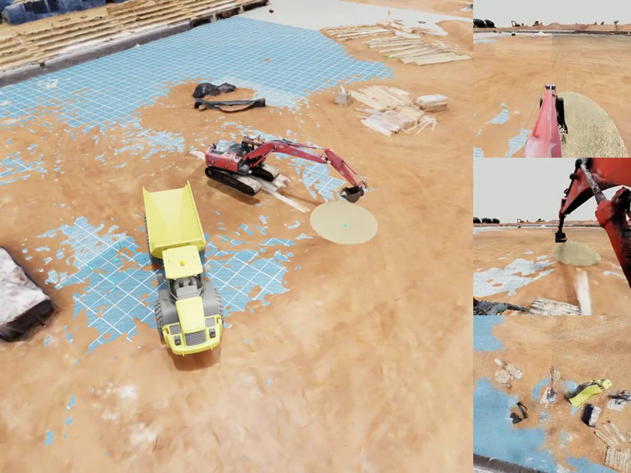
공개 평가 영상 30초 · 왼쪽 전체 시점 + 오른쪽 정책 카메라 3대 · 감독기를 켠 상태의 한 사이클- 데이터
- Isaac Sim 입자 흙(약 4.5만 개) · 고정 차체 4축 · 흙더미를 아는 스크립트 교사가 10단계 굴착→트럭 적재 시연 · 품질 게이트 통과 572회 / 62,216 프레임
- 입·출력
- 카메라 3대(256²) + 고정 지시문 + 상태 27개(굴착 목표점·하역점·버킷 입자 수 포함) → 4축 관절 속도 50스텝 묶음, 앞 3스텝 실행
- 모델·학습
- SmolVLA(0.45B) · 시각 인코더 고정, 액션 전문가·상태 투영층·추가한 단계 분류 헤드 학습 · 567회로 학습 후 평가 장면 5회로 미세학습 · GPU 대여 약 1,540위안
- 결과
- 같은 장면 200회 중 167회 성공(83.5 %) · 성공 = 트럭에 입자 1개 이상 · 감독기 없이 다른 팀이 500 장면 재평가 시 58 %
- 한계
- 들기 이후는 규칙 기반 감독기가 관절을 대신 움직임 · 목표점이 상태로 주어짐(어디 팔지 선택 안 함) · 평가 장면 = 학습 장면 · 학부 캡스톤, 라이선스 없음
출처: lingxiao-yang.github.io/Excavator_VLA_project_overview · github.com/jxbb824/ExcavatorVLA (smolvla) · SJTU ME 450 Group 19, 2026 · 그림·영상 © 원저자(라이선스 미표기)
12
발표자 메모 · 근거
SJTU Global College ME 450 캡스톤 Group 19(2026 여름, 후원 Builder[x] Robotics, 지도 Prof. Qianli Chen). 시뮬레이터 Isaac Sim GPU PhysX, 물리 60 Hz/정책 10 Hz, 입자 약 45,000개, 고정 베이스 4자유도 URDF, 속도 명령 적분 → 강성 PD 위치 드라이브, 유압 없음. 교사: 특권 스크립트(7×7 격자 점수화로 굴착점 선택, 해석적 IK 10단계 pre_dig→…→unload_to_bin), 572개/62,216프레임. 학습: SmolVLA(SmolVLM2-500M 기반, 약 4.5억), 시각 인코더 고정, 액션 전문가·상태 투영층·단계 분류 헤드 학습, AdamW lr 5e-5, batch 144, 567 → seed 2 장면 5개 미세학습 → ckpt 18,450. 평가: seed 2 고정 장면 200회, 350스텝 상한, 3스텝마다 재계획, 감독기 켬 → 167/200. 상태 27D(레거시 v3: base_x/y/yaw, 월드 좌표, 버킷 입자 수 포함), 성공 기준 트럭 적재함 입자 ≥1. 후속 제3자(moonlightplague/ExcavatorVLA_new): 감독기 없이 ckpt 040000, 무작위 500 장면, 입자 ≥100 기준 290/500(58 %) — 같은 선에서 비교 불가.
가져올 것: 단계형 교사와 단계 라벨, 두 층 품질 게이트, 정규화 통계 SHA 핸드셰이크, 실패 분류 코드. 피할 것: 특권 입력으로 과제 쉽게 만들기, 감독기 성공을 정책 성공으로 보고, 평가 장면을 학습에 포함.
근거: docs/research/2026-11-07-sjtu-excavator-smolvla-capstone-analysis.md, 세션 인계문서 2026-11-08-sjtu-excavator-vla-session-handoff.md.
12. 파인튜닝 방법 — GR00T N1.7
시각·언어 모델은 고정, 로봇별 투영층과 확산 헤드를 학습
13
발표자 메모 · 근거
기반 nvidia/GR00T-N1.7-3B, embodiment 태그 new_embodiment(슬롯 10). 학습 대상: 상태 인코더·행동 디코더(투영층) + DiT 액션 헤드, tune_vlln=True. LLM·시각 인코더 고정. LoRA 아님. 데이터셋 LeRobot v2.1 + meta/modality.json + modality config. 행동 4D ABSOLUTE·NON_EEF, delta_indices 0~15, 132D 패딩(strict_action_padding_mask 검토).
근거: docs/research/2026-11-04-model-io-contract.md §7(c), Isaac-GR00T 공식 파인튜닝 문서(gr00t/configs/finetune_config.py: tune_llm False, tune_visual False, tune_projector True, tune_diffusion_model True; tune_vlln True. getting_started/hardware_recommendation.md: 파인튜닝 최소 40 GB+ GPU, 기본 설정 약 35 GB, LLM·ViT까지 풀면 80 GB+).
13. 파인튜닝 방법 — π0.5
두 큰 블록은 LoRA, 영상 인코더와 입출력 투영은 전체 학습
14
발표자 메모 · 근거
기반 pi05_base(gs://openpi-assets/checkpoints/pi05_base). 설정: gemma_2b_lora + gemma_300m_lora(이중 LoRA), 영상 인코더·action_in_proj/action_out_proj·time_mlp는 학습. 상태 discrete_state_input=True(256구간 → 프롬프트 토큰). 정규화 통계 compute_norm_stats로 사전 계산. 행동 32D 패딩 중 앞 4D 사용, action_horizon 16. 메모리 수치는 openpi 공식 README(openpi README 메모리 표: 추론 8 GB+, LoRA 22.5 GB+, 전체 70 GB+. 주의: 공식 config.py에는 pi05용 LoRA 설정이 없어 pi05=True + gemma_2b_lora/gemma_300m_lora + freeze_filter를 직접 조합해야 함).
근거: docs/execution/models/excavator-ft-entry.md L294–295·L604–606.
14. APEX에서 뽑는 데이터
ROS 2 토픽을 듣기만 하는 기록기로 받아 영상·상태·명령을 한 시각축에
15
발표자 메모 · 근거
APEX: Unity + AGX 입자 흙, HR35 디지털 트윈, ROS 2 Humble, 유압(plant) 끔. 토픽: /apex/sensor/camera/{cabin,boom}/rgb(+camera_info) 640×480 5 Hz, /apex/hr35/measured_joint_states(r06에서 96.3 Hz), /apex/hr35/plant_state(18/24 슬롯: 링크 각·차체 롤피치요·GNSS·등가 실린더 힘·(plant 켤 때) 압력), /apex/hr35/command [1,swing,boom,arm,bucket] ∈[−1,1], /clock, /tf. LiDAR cabin·boom → hr35_lidar_grid_mapper → /apex/grid_map/elevation 0.10 m, 미관측 NaN, 셀별 최소 높이 누적, 5 Hz.
기록: scripts/apex/observe.py(구독 전용, 원시 CDR + events.jsonl) → scripts/apex/convert_raw.py(카메라별 JSONL + 무손실 PNG) → LeRobot v2.1 변환기, 아직 잠금). 수집 계약: 5 Hz 기준, 10 Hz 명령, |u|≤0.2, 상태 q4+v4, 행동 요청 u4, 지시문 "move the bucket edge to the red ball".
근거: docs/execution/apex/runbook.md, configs/apex/observer-commanded-r12.json, docs/execution/apex/intermediate-contract.md, state-signal-mapping-proposal-2026-11-07.md, model-io-contract §13.
15. 시험할 데이터셋 — 세 단계
쉬운 것부터 · 버킷 이동 → 굴착 → 전체 사이클 · 공격점 선택은 확장
16
발표자 메모 · 근거
1단계 버킷 이동: 1-A 좌표+영상(연결·행동 출력 확인), 1-B 영상만으로 공 찾아가기(실패 시 모델 문제/과제 난이도 분리), 1-C 새 시작 위치·새 목표 평가. 현재 1-B·1-C 설계·분할 동결(20 에피소드), 수집 전.
2단계 굴착만: 교사가 관입·끌기·컬·들기로 나눠 단계 라벨 → 먼저 지시문으로 단계 주고 전환은 바깥 상태기계 → 다음 정책 하나가 전환까지.
3단계 전체 사이클: 덤프 위치 → 공격점 → 굴착 → 덤프 → 덤프 작업. 최종 보고 필수 아님(계획만).
확장: 공격점(POA) 선택까지 정책이. 지형 입력 필요 → 다음 장.
근거: handoff §4.2.
16. 공격점을 고르려면 지형이 보여야 한다
지형 높이 격자를 그림으로 VLM에 넣거나(길 A), CNN 토큰으로 상태에 붙이거나(길 B)
17
발표자 메모 · 근거
왼쪽 화면: APEX 실제 RViz 화면((로컬 캐시) 오른쪽 모니터 부분) — HR35 위에 캐빈·붐 LiDAR를 융합한 ElevationGridMap(파란 점)과 굴착 자국(녹·적). 원시 LiDAR 점군 자체는 저장된 적이 없어(센서 로거는 점 개수와 표본 4점만 기록) 점군 그림은 없다. 가운데 격자: 같은 세션의 dug-grid.json(2026-09-10, 12×12 m, 0.1 m, 120×120, 유효 32 %)을 export_height_image.py로 변환한 height_m.npy·valid.npy를 RViz 비슷한 색(파랑→빨강, −0.05~0.10 m)으로 그린 것. 흰색 = 미관측, 회색 사각형 = 원점의 굴착기. 컬러맵은 설명용이며 모델 입력에서는 색↔높이 대응을 모든 에피소드에서 고정해야 한다.
길 A: 부드러운 컬러맵 이미지를 세 번째 영상 슬롯에(π0.5 right_wrist 슬롯 / GR00T video 키 추가). 인코더 고정 → LoRA → 전체 학습 순. 이산 바둑판 이미지는 칸 경계를 무늬로 볼 위험.
길 B: 원 격자(현재·목표·차이 3채널) → 소형 CNN → 4×4 구역 토큰 16개를 모델 폭으로 투영해 토큰 줄에 추가. 공식 옵션 아님.
선형 프로브: 인코더 고정 + 선형층으로 교사 공격점 좌표 예측, 학습에 안 쓴 지형으로 평가(몇 시간 규모).
근거: handoff §4.4·§4.5, docs/execution/terrain/cpu-height-image.md, plan.md .
17. 첫 수집 데이터 — 교사 시연 20회
공 위치를 아는 교사 제어기가 움직이고, 기록기는 영상·상태·명령을 같은 시각으로 저장
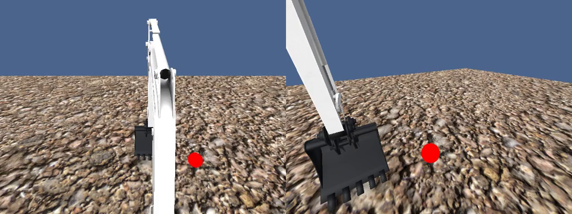
교사 시연 예 · 왼쪽 캐빈 위 카메라, 오른쪽 붐 아래 카메라 · 2배속 · VLA 아님18
발표자 메모 · 근거
영상: runs/ops/apex-policy-eval/episodes/mp_f3_lm1_u0p35-S2/shadow/session-2-run-1/judge/two-view.mp4(교사가 명령, 정책은 기록만 하는 그림자 시험; 수집과 같은 교사·환경). 2배속으로 줄임. 수집 설계: configs/apex/splits/movement-v1-splits.json(수집 전 동결), 빨간 공 지름 0.3 m, 5 Hz, |u|≤0.2, 지시문 "move the bucket edge to the red ball". 품질 판정 D6~D9 규칙 적용 후 19/20 합격.
18. Lambda에서 파인튜닝한 과정
실패 원인을 하나씩 고쳐 GR00T 본 학습 완료 · 평가 오차 5.6배 감소
19
발표자 메모 · 근거
외부 GPU(Lambda H100 PCIe·SXM5)에서 GR00T 첫 학습 세션을 세 번 거쳤다. 1차: 환경 준비 통과, 한 번 갱신은 오프라인 모델 캐시 설정 오류로 실패 → 수정. 2차: 한 번 갱신 통과(배치 1 상태 dropout·bf16 재로드 검사 수정), 64회 과적합 검사에서 손실 −64.7 %지만 방향 일치 기준 미달(학습량 부족·정지 구간 75~92 % 분석). 3차: 본 학습 547회(20 epoch, batch 16, lr 1e-4 cosine, 약 23.5분), 평가 자료 MAE 0.1222 → 0.0695 → 0.0266 → 0.0218, 방향 일치 0.94/0.67/0.70/0.68, 0을 내는 기준 0.0346.
이후 같은 절차로 π0.5 첫 학습, 버킷 이동 2·3차와 공·콘 합본, 굴착 v2·v3 학습을 모두 외부 H100에서 했다.
근거: docs/execution/models/first-gr-session-result-2026-11-08.md, first-gr-g4-fit-analysis-2026-11-09.md, gr-second-session-result-2026-11-09.md.
19. 학습 후 첫 결과 — 버킷이 공까지 간다
11/09 파인튜닝한 GR00T 혼자 조종 · 학습에 안 쓴 위치에서 유효 3회 중 3회 도달
위치 6 · 2번째0.31 m
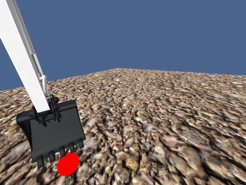
위치 7 · 3번째0.35 m
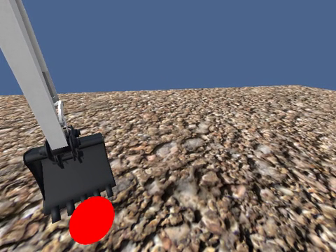
위치 7 · 1번째0.22 m
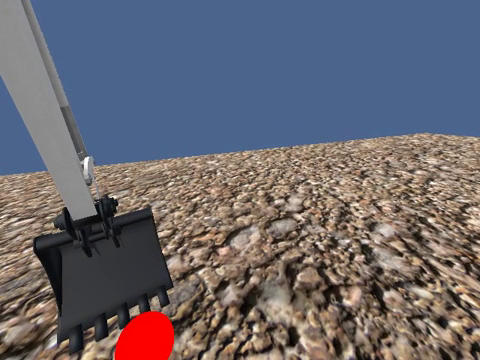
붐 아래 카메라 · 2배속 · 숫자는 버킷 끝~공 최소 거리 · 성공 = 0.5 m 안 1초 유지 · 학습 전 72회 0회 → 학습 후 3/3 · 추론은 로컬 RTX 5080, 약 0.1초
20
발표자 메모 · 근거
정책 단독 폐루프(교사 개입 없음, 모든 P 구간 명령 source=policy_g5 검증). 체크포인트 checkpoint-547(gr-second-01 G5). 추론: 로컬 RTX 5080 bf16, 공식 Gr00tPolicy + ZMQ(127.0.0.1), VRAM 약 6.4 GB, H100 평가와 MAE 0.02174 대 0.02177로 일치, 지연 p95 109.8~114.0 ms, 5 Hz 제어 경계 전 도착 15/15.
결과: P6-S2 d_min 0.307 m(16.2 s에 유지 충족), P7-S3 0.354 m(20.8 s), P7-S1 0.223 m(18.0 s; 1차 시도는 창 포커스 문제로 시작 전 실패 → 재실행). N=4, infra 1, n=3, k=3, Wilson 95 % [0.439, 1.0]. 위치 6·7은 dev 분할(학습 제외). 한계(11/09 당시): 분모가 작고, 시험 분할(test P2×4)과 π0.5는 이 시점 미평가 → 다음 장부터 이후 결과. 학습 전 0/72는 MuJoCo HR35 무학습 시험으로 환경이 다르다(직접 동일 비교 아님).
근거: runs/ops/apex-policy-eval/reports/t22-policy-sessions-3-4-combined-20261109.md, docs/execution/models/g5-policy-server-2026-11-09.md.
20. 버킷 이동 — 검증 위치 결과
모델을 바꿔 가며 다시 학습해도 위치 7 · 3번째에서만 반복 실패
π0.5 공·콘 ① · 위치 7·3 실패
붐 카메라 · 2배속 · 모델 구간만
팔을 거의 접지 않고 멈춤공·콘 합본 = 빨간 공과 꼬깔콘 표적을 한 모델로 함께 학습
21
발표자 메모 · 근거
dev 3장면(P6-S2, P7-S1, P7-S3, 출발 거리 0.84–1.23 m) 장면마다 1회. 성공 = 모델 혼자 운전하는 약 12초 구간에서 버킷 끝과 표적 사이 0.5 m 안에 1초 이상 연속 + 0.3초 넘는 기록 공백 없음 + 끝난 뒤 정지 확인 + 명령 거부 없음.
π0.5 2차 P7-S3는 인프라 제외(참고 0.768 m). π0.5 공·콘 ② P7-S3 0.327 m는 원 판정이 '구간 안 사진 59장'으로 인프라였으나 구간 경계 계산 문제(최대 공백 0.23 s)라 '60장 이상' 보완 규칙으로 성공(그 전 run에는 사후 보완 규칙).
콘: π0.5 공·콘 ① 2/3(P7-S3 실패 0.647 m), ② 3/3(P7-S3 0.277), GR00T 공·콘 ② 3/3(P7-S3 0.252, P6-S0 0.042).
측정 조건: 로컬 RTX 5080 16 GB 1장(시뮬레이터와 모델 서버 공유), 드라이버 595.91.07, bf16, 10 Hz 명령·8단계 묶음 중 앞 4단계 실행·명령 크기 ±0.2, 정책 seed 7.
근거 정리본: docs/execution/results/2026-11-12-numbers.md §1.1, 비교표 docs/execution/apex/policy-eval-comparison-dev3-2026-11-09.md.
영상: 정책(모델) 구간만 잘라 재인코딩(960×360, h264), 원본 run 영상은 그대로 보존.
21. 버킷 이동 — 실패 원인과 보충 시범
원인은 출발 자세 빈칸 · 팔을 접는 시범 8개 보충 → 같은 위치 성공
π0.5 공·콘 ① 실패
π0.5 공·콘 ② 성공
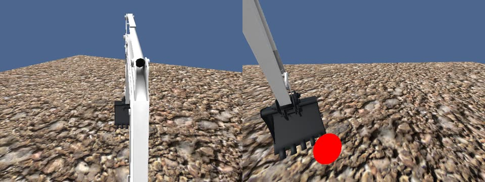
첫 팔 명령 −0.230.33 m
GR00T 공·콘 ② 성공
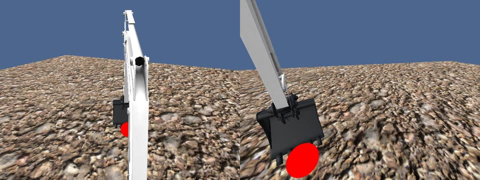
첫 팔 명령 −0.200.25 m
① 그 출발 자세의 학습 장면 17개 중 팔 접기 0개 · 관절 상태만 바꿔 넣으면 첫 명령이 접기로 바뀜(카메라 사진만 바꾸면 그대로)
② 교사(규칙 제어기, VLA 아님) 보충 시범 8개(4위치 × 공·콘) 추가 → 검증 위치 공·콘 두 모델 6/6
위치 7·3 · 붐 카메라 · 2배속 · 모델 구간만 · 보충 장면은 실패를 본 뒤 그 근처에서 골랐다(처음 보는 위치 일반화 근거 아님)
22
발표자 메모 · 근거
실패한 4 run(GR00T 3차·π0.5 3차·π0.5 공·콘 ① 공·콘)은 첫 명령부터 팔 명령이 0 근처이거나 펴는 쪽이었고 끝 팔 각도 0.62–0.67 rad. 교사는 출발 2.4초 동안 팔을 최대 속도로 접어 0.600 → 0.297 rad.
바꿔 넣기 시험(로컬 GPU, 2026-11-10): π0.5 공·콘 ①에 P7-S3 첫 관측을 넣고 관절 상태만 P7-S1 것으로 바꾸면 팔 첫 명령 +0.03 → −0.18 ~ −0.24(seed 3개 모두), 카메라 사진만 바꾸면 +0.03 ~ +0.07. 이 모델의 첫 명령은 화면이 아니라 출발 관절 자세로 정해진다.
보충 수집: S3 자세에서 가까운 표적으로 팔을 접는 교사 장면 8개, 8개 모두 학습 자료 판정 수락. 학습 자료 run 24 → 32, 학습 창 1,217 → 1,610, S3 자세 행 17 → 35(팔 접기 0 → 18).
실제 운전(P7-S3): π0.5 ① 공 +0.033 / 0.656 m 실패 → ② 공 −0.233 / 0.327 m 성공, ② 콘 −0.232 / 0.277 m 성공, GR00T ② 공 첫 명령 −0.200 / 0.251 m 성공. 팔은 여전히 교사만큼 접지 않는다(끝 +0.12–0.17 rad).
측정 조건: 로컬 RTX 5080 16 GB 1장(시뮬레이터와 모델 서버 공유), 드라이버 595.91.07, bf16, 10 Hz 명령·8단계 묶음 중 앞 4단계 실행·명령 크기 ±0.2, 정책 seed 7.
근거 정리본: docs/execution/results/2026-11-12-numbers.md §1.2–§1.3, 분석 docs/execution/apex/p7s3-failure-analysis-2026-11-10.md.
영상: 정책(모델) 구간만 잘라 재인코딩(960×360, h264), 원본 run 영상은 그대로 보존.
22. 버킷 이동 — 최종 시험 위치
잠가 둔 시험 위치에서 GR00T 7/8 · π0.5 7/8 · 단, 출발이 표적 가까워 변별력 낮음
GR00T · 공 · 시험 2번째 성공
π0.5 · 공 · 시험 1번째 성공
GR00T · 꼬깔콘 · 위치 6 성공
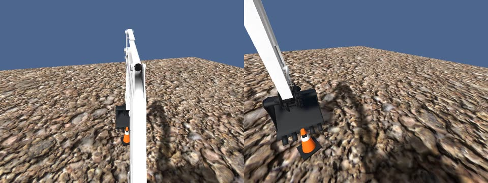
검증 위치 · 콘0.04 m
시험 결과(공 4 + 콘 4): GR00T 7/8(콘 1건은 끝난 뒤 관절 기록 0.54 s 공백으로 규칙상 실패) · π0.5 7/8(공 1건 화면 지연으로 제외)
시험 위치는 출발할 때 이미 표적과 0.24–0.56 m(검증 위치는 0.84–1.23 m) → “표적 근처에서 벗어나지 않는 능력”에 가깝고 두 모델을 가르지 못한다 · 붐 카메라 · 2배속 · 모델 구간만
23
발표자 메모 · 근거
최종 test(P2, 각 모델 공·콘 seed 4개씩 1회, 실행 전 고정 규칙).
GR00T 공·콘 ②: 공 0.234/0.198/0.293/0.330 4/4, 콘 S0 실패(버킷은 12초 내내 0.5 m 안·최소 0.24 m였으나 끝난 뒤 정지 확인 단계 관절 상태 메시지 0.54 s 공백, 허용 0.5 s → 규칙대로 실패) 0.203/0.302/0.323 → 7/8.
π0.5 공·콘 ②: 공 0.170/0.039/인프라(프레임 간격 99 % 값 78.4 ms, 기준 60 ms, 분모에 남김)/0.389 3/4, 콘 0.179/0.211(재실행: 무관한 예약 작업 CPU 사용으로 시작 전 멈춤)/0.325/0.241 4/4 → 7/8.
'아무것도 안 하는 정책' 기준선은 측정하지 않았다(미검증). 차이가 드러난 점(참고): GR00T는 60개 표본 중 51–60개를 0.5 m 안에, π0.5는 7–60개. 모델 응답 중앙값 GR00T 103–109 ms, π0.5 119–122 ms.
세 번째 영상은 시험이 아니라 검증 위치 6 꼬깔콘(GR00T 공·콘 ②, 0.042 m).
측정 조건: 로컬 RTX 5080 16 GB 1장(시뮬레이터와 모델 서버 공유), 드라이버 595.91.07, bf16, 10 Hz 명령·8단계 묶음 중 앞 4단계 실행·명령 크기 ±0.2, 정책 seed 7.
근거 정리본: docs/execution/results/2026-11-12-numbers.md §1.4, docs/execution/apex/policy-eval-test-final-2026-11-10.md.
영상: 정책(모델) 구간만 잘라 재인코딩(960×360, h264), 원본 run 영상은 그대로 보존.
23. 버킷 이동 — 처음 보는 위치
어느 자료에도 없던 위치 2곳 · GR00T 4/8 · π0.5 6/8 · 높은 곳은 움직임이 모자람
π0.5 · 낮은 위치 성공
낮은 위치(위치 17)는 8 run 모두 0.39 m 안π0.5 · 높은 위치 실패
높은 위치(위치 16)는 8 run 모두 0.42–0.53 m에서 멈춤붐 카메라 · 2배속 · 모델 구간만 · 출발 거리 0.92–1.26 m
읽는 법
4/8 · 6/8GR00T · π0.5
- 방향은 처음 보는 위치에서도 대체로 맞다
- 크기가 모자람: 높은 위치에서 붐이 0.12–0.17 rad 낮고 팔이 0.25–0.32 rad 덜 접힘
- GR00T 실패 4건 중 2건은 끝난 뒤 기록 공백 → 거리만 보면 6/8 대 6/8, 우열 미확정
24
발표자 메모 · 근거
새 위치(실행 전 고정 규칙): P16 = 전방 2.5 m·오른쪽 0.5 m·높이 0.75 m, P17 = 전방 2.5 m·왼쪽 0.5 m·높이 0.35 m. 둘 다 학습 위치 사이(보간), 가장 가까운 기존 위치와 0.64 m. 학습 범위 밖(외삽) 후보는 시뮬레이터 점검을 통과한 것이 없어 시험하지 않음.
GR00T 공·콘 ②: 공 P16-S1 실패 0.494 / P16-S3 성공 0.426 / P17-S2 실패(정지 확인) 0.284 / P17-S3 성공 0.321, 콘 실패 0.490 / 실패(정지 확인) 0.424 / 성공 0.385 / 성공 0.298 → 4/8(거리 기준만 6/8).
π0.5 공·콘 ②: 공 성공 0.449 / 실패 0.528 / 성공 0.115 / 성공 0.135, 콘 실패 0.485 / 성공 0.454 / 성공 0.113 / 성공 0.080 → 6/8.
P16 성공 3번도 경계(0.43–0.45 m). 교사는 같은 곳을 2 mm까지 간다(오프라인 재현). 정지 확인 실패 3건은 모두 GR00T(관절 상태 0.51–0.80 s 공백, 관절은 실제로 멈춤, 원인 미확인).
GR00T 새 위치 대표 영상은 결과 문서에 따로 지정되지 않아 π0.5 영상만 싣는다.
측정 조건: 로컬 RTX 5080 16 GB 1장(시뮬레이터와 모델 서버 공유), 드라이버 595.91.07, bf16, 10 Hz 명령·8단계 묶음 중 앞 4단계 실행·명령 크기 ±0.2, 정책 seed 7.
근거 정리본: docs/execution/results/2026-11-12-numbers.md §1.5, docs/execution/apex/policy-eval-newpos-2026-11-10.md.
영상: 정책(모델) 구간만 잘라 재인코딩(960×360, h264), 원본 run 영상은 그대로 보존.
24. 굴착 — 네 동작으로 나눠 학습
관입 → 끌기 → 닫기 → 올리기를 동작별 지시문으로 한 모델에 학습
25
발표자 메모 · 근거
성공 기준(동작별, 실행 전 고정): 관입 = 끝 날 깊이 0.02 m 이상(최대 0.15 m 이하), 끌기 = 전진 0.25 m 이상 + 끄는 동안 날이 흙 속에 있던 비율 0.80 이상 + 끝 흙량 1.0 kg 이상, 닫기 = 버킷 각도 −130° 이하 + 흙 0.5 kg 이상이고 그때까지 최대량의 70 % 이상, 올리기 = 날이 흙 표면 위 1.2 m 이상 + 흙 80 % 이상 유지. 여기에 화면 기준까지 넘어야 '성공', 화면 기준을 못 넘으면 '판정 제외'(실패가 아님, 이 PC 시뮬레이터에서 검증 불가).
위치: 학습 위치(몸통 회전 0)와 검증 위치(+0.12 rad). v3 모델은 학습 위치(+0.10, +0.14)가 검증 위치를 양쪽에서 감싸 '보간'에 가깝다.
학습 자료: v2 = 흙 위치 3곳·학습 창 833, v3 = + 새 위치 12곳·학습 창 1,996(관입 882, 끌기 55 → 187, 닫기 332, 올리기 595), 끌기 창 3배 반복. 두 모델 모두 외부 H100에서 학습.
근거 정리본: docs/execution/results/2026-11-12-numbers.md §2.0·§2.3.
25. 굴착 — 첫 평가: 끌기에서 날이 뜬다
첫 평가 GR00T 2/4 · π0.5 1/4 · 끌기 4칸 모두 실패, 흙 실은 동작은 판정 불가
π0.5 · 끌기 · 검증 위치 실패
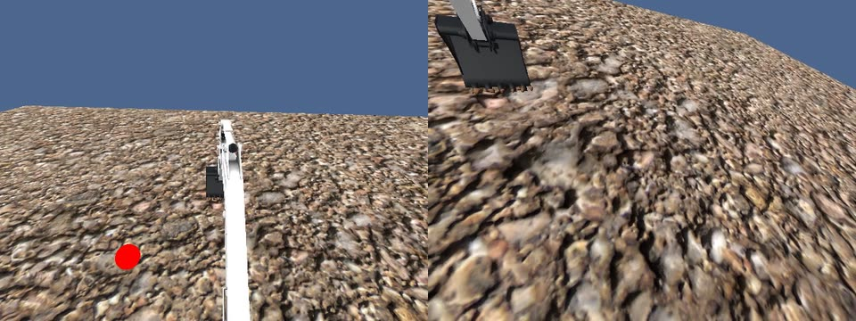
날이 흙 위로 뜸 · 흙 속 비율0.22
- 문제 ① 끌기 중간 날 깊이: 교사 +1.6~2.1 cm(흙 속) ↔ 모델 −2.5~−3.8 cm(흙 위)
- 문제 ② 흙을 실은 닫기·올리기에서 화면이 느려져 판정 제외
26
발표자 메모 · 근거
1차 동작별 폐루프(11/10, v2 모델, 판정 규칙 v3 사전 고정). 교사가 직전 동작까지 운전 → 그 동작만 모델이 운전.
관입: GR00T 학습 위치 판정 제외(정지 확인 실패), 검증 위치 성공 / π0.5 두 위치 성공. 끌기: GR00T 흙 속 0.46·0.23, π0.5 0.25·0.22 모두 실패. 닫기: 모두 판정 제외(화면 느림). 올리기: GR00T 검증 위치만 성공, 나머지 판정 제외.
통과 동작(두 위치 중 한 곳 이상 성공): GR00T 2/4(관입·올리기), π0.5 1/4(관입). 정책 동작만 본 기준(참고): 관입 5/5, 끌기 5/5 실패, 닫기 7/8, 올리기 7/7 통과. 연속 굴착 진입 조건(3/4) 미달.
측정 조건: RTX 5080, 595.91.07, bf16, 벽시계 화면 기준(동기 정지 전).
근거 정리본: docs/execution/results/2026-11-12-numbers.md §2.4–§2.5, docs/execution/apex/dig-closedloop-eval-v3-2026-11-10.md.
영상: 정책(모델) 구간만 잘라 재인코딩(960×360, h264), 원본 run 영상은 그대로 보존.
26. 굴착 — 보완 세 가지
자료 보강 · 시뮬레이터 동기 정지 · 추론 지연 보정 — 재학습은 첫 번째뿐
1끌기 자료 보강새 흙 위치 12곳에서 교사 시연 수집 · 끌기 학습 창 55 → 187 · 끌기 3배 반복해 재학습
왜: 끌기 창이 다른 동작(215–294)보다 훨씬 적었다
오프라인 끌기 붐 오차 1/3–1/4로 감소
실제 끌기는 여전히 실패 → 3번으로
2시뮬레이터 동기 정지모델이 계산하는 0.12–0.2 s 동안 시뮬레이터 시간을 멈추고, 답이 오면 재개
왜: 같은 GPU에서 π0.5 계산 중 화면이 5–8배 느려짐 · 원격 추론은 왕복 0.94 s로 불가
멈춤 218회 모두 정상 · 닫기·올리기도 판정 가능해짐
3추론 지연 보정왜: 0번 칸은 ‘관측 순간’용인데 실제 적용은 0.13–0.2 s 늦어 붐을 더 올림 · 묶음 자체는 교사와 거의 같음
재학습 없이 끌기 8/8
27
발표자 메모 · 근거
보완 1(11/11): 새 흙 위치 12곳 교사 수집(14 run 모두 정상, 끌기 12/12 채택), 학습 창 833 → 1,996, 끌기 창 3배 반복(실행 전 고정). 검증 위치 끌기 붐 오차 GR00T 0.0192 → 0.0050, π0.5 0.0137 → 0.0056(오프라인 지표, 실제 굴착 성공을 뜻하지 않음).
보완 2(11/11): 모델 계산 중 시뮬레이터 시간 0배, 화면 기준 시계 = 시뮬레이터 시간(수치는 그대로). 같은 GPU에서 π0.5 계산 중 관입 화면 198 → 34장/초(GR00T는 약 1.5배 느려짐). 원격 추론 시험: 외부 H100(미국 서부), 모델 계산 0인 가짜 서버, 실제 굴착 사진 2장 150회 왕복 p50 938 ms·p99 1,569 ms(필요 0.2 s) → 불가.
보완 3(11/12): 모델이 낸 8칸 묶음 중 0번 칸을 건너뛰고 1번 칸부터 실행. 모델 묶음은 교사와 거의 같음(붐 차이 −0.01 ~ +0.02)이나 0번 칸 적용이 0.13–0.2 s 늦어 붐을 +0.016 ~ +0.035 더 올림. 모의 실행에서 둘째 칸부터 실행 시 흙 속 1.0. 이 실행 방식은 끌기 실패를 본 뒤 골랐다(규칙 자체는 실행 전 고정).
주의: 첫 평가 → 재평가 사이에 모델(v2 → v3)·진행 방식(동기 정지)·화면 시계가 함께 바뀌었다. 개선을 한 가지 원인으로 돌리지 않는다. 재평가 → 끌기 보정은 실행 방식 하나만 바뀌었다.
근거 정리본: docs/execution/results/2026-11-12-numbers.md §2.5, docs/execution/models/dig-drag-improve-2026-11-11.md, docs/execution/apex/dig-eval-infra-2026-11-11.md, docs/execution/models/dig-drag-round2-2026-11-12.md.
27. 굴착 — 동작별 재평가
보완 1·2 적용 후 두 모델 모두 관입 · 닫기 · 올리기 통과 (3/4)
관입
닫기
올리기
GR00T3/4 동작
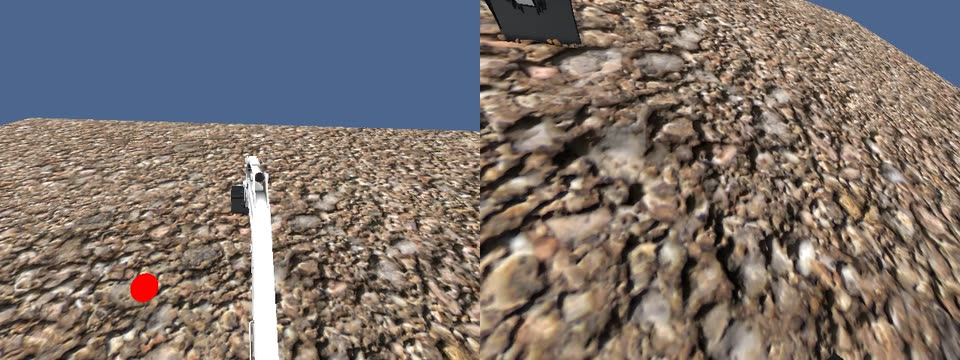
검증 위치 · 깊이 6.1 cm성공
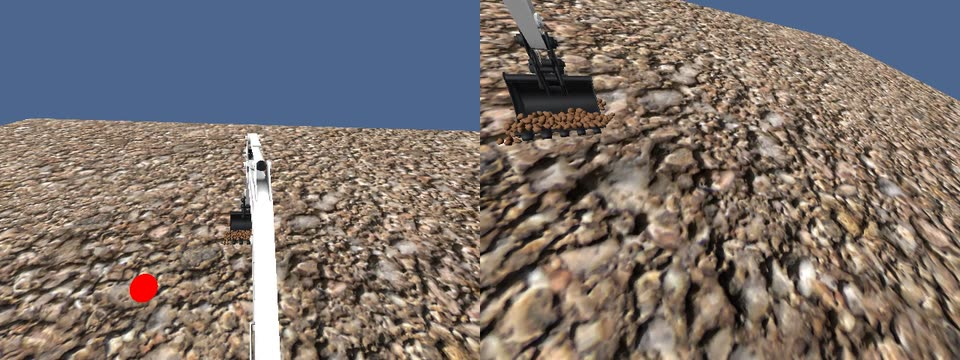
검증 위치 · −132° · 13.0 kg성공
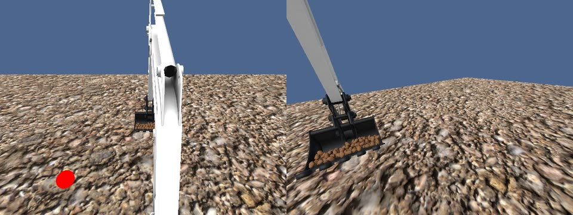
학습 위치 · 끝 18.3 kg성공
π0.53/4 동작
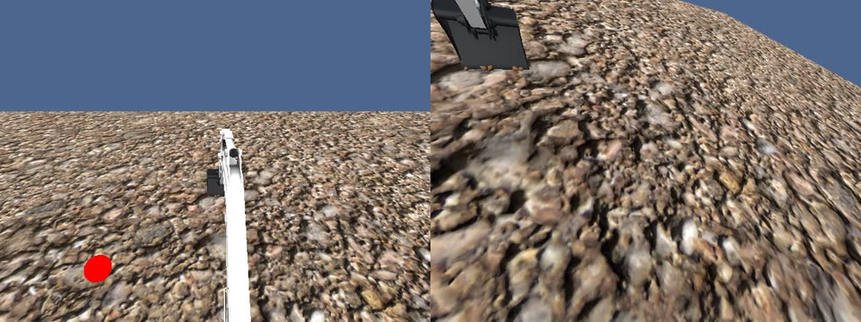
학습 위치 · 성공성공
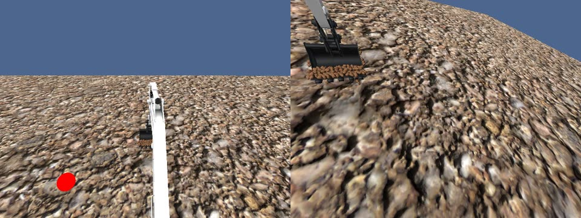
학습 위치 · −133° · 14.4 kg성공
붐 카메라 · 실제 속도 · 각 동작의 모델 구간만 · 끌기는 두 모델 모두 아직 실패(흙 속 비율 0.33–0.75, 기준 0.80) → 다음 장
28
발표자 메모 · 근거
동작별 재평가(11/11, v3 모델, 동기식, 규칙 v4.2 실행 전 고정).
GR00T: 관입 학습 위치 성공(깊이 0.037 m)·검증 위치 성공(0.061 m), 끌기 실패(흙 속 0.33, 0.68 kg / 0.59, 1.94 kg), 닫기 학습 위치 판정 제외(흙 14 kg 물리 부하로 검증 불가)·검증 위치 성공(α −132.1°, 13.0 kg), 올리기 성공(끝 18.3 kg / 15.1 kg) → 3/4.
π0.5: 관입 학습 위치 성공·검증 위치 판정 제외(가드 감시 오류·메모리 압력 비상 정지), 끌기 실패(0.53, 0.95 kg / 0.75, 1.75 kg), 닫기 학습 위치 성공(α −132.5°, 14.4 kg)·검증 위치 판정 제외(19 kg 검증 불가), 올리기 학습 위치 성공(17.8 kg)·검증 위치 미실행(시작 전 여유 메모리 부족) → 3/4.
끌기 개선 정도: 구간 절반 날 깊이 −2.5 ~ −3.8 cm → −0.3 ~ −1.2 cm, π0.5 흙 속 0.22–0.25 → 0.53–0.75.
이전 판정과 나란히: GR00T 2/4 → 3/4, π0.5 1/4 → 3/4.
측정 조건: 로컬 RTX 5080, 드라이버 595.91.07, bf16, 동작당 모델 서버 1개. v4.2 이후 동기식(모델 계산 중 시뮬레이터 정지), 화면 기준은 시뮬레이터 시간으로 계산(정책 구간 초당 90장 이상·느린 1 % 프레임 60 ms 이하·사진 공백 0.3 s 이하). 모델·동작·위치당 유효 run 1개 → 위치 일반화·모델 우열을 주장하지 않는다.
근거 정리본: docs/execution/results/2026-11-12-numbers.md §2.6, docs/execution/apex/dig-closedloop-eval-v42-2026-11-11.md.
영상: 정책(모델) 구간만 잘라 재인코딩(960×360, h264), 원본 run 영상은 그대로 보존.
28. 굴착 — 끌기: 명령을 한 칸 앞당기자
끌기 실패의 큰 원인은 ‘무엇을’이 아니라 ‘언제’ · 재학습 없이 끌기 8/8
GR00T · 학습 위치
π0.5 · 검증 위치
보정 전11/11
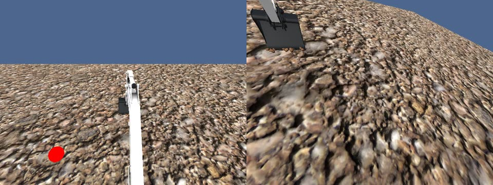
흙 속 0.33 · 0.68 kg실패
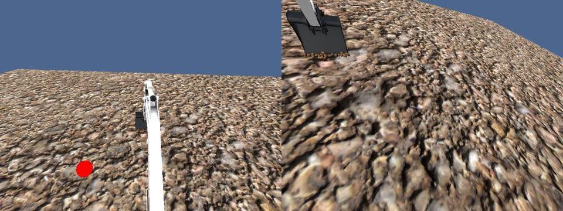
흙 속 0.75 · 1.75 kg실패
둘째 칸부터 실행
8/8끌기 성공
- 두 모델 × 두 위치 × 실행 칸 수 2가지
- 흙 속 비율 1.0(교사 0.81–0.92)
- 끝 흙 2.6–5.8 kg(교사 2.0–2.6)
- 재학습 없음 · 같은 모델·같은 판정
보정 후11/12
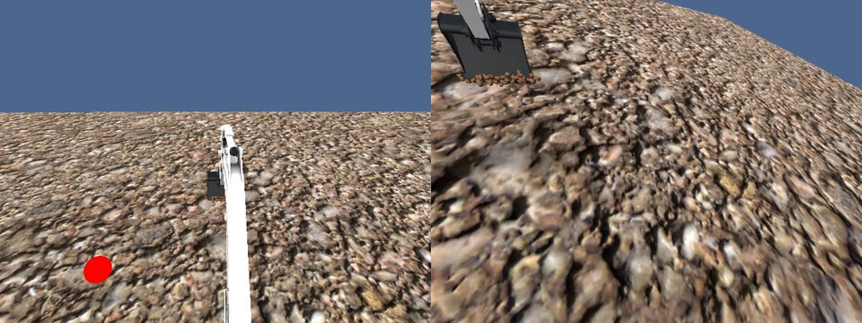
흙 속 1.0 · 3.83 kg성공
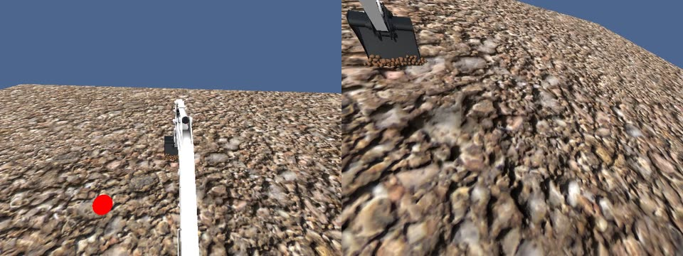
흙 속 1.0 · 5.50 kg성공
붐 카메라 · 0.5배속 · 끌기 모델 구간(2.4–3.2 s)만 · 앞 동작은 교사(VLA 아님) · 이 실행 방식은 끌기 실패를 본 뒤 골랐다
29
발표자 메모 · 근거
끌기 추론 지연 보정 시험(11/12, 규칙 v4.2-k2 실행 전 고정, 판정 기준·판정기 동일). 실행 방식 2가지: 1–4번 칸 실행, 1·2번 칸 실행.
결과 8/8: GR00T 학습 위치 흙 속 1.0·이동 0.255 m·3.83 kg(4칸) / 1.0·0.260·3.19(2칸), π0.5 학습 위치 1.0·0.259·5.58 / 1.0·0.263·3.18, GR00T 검증 위치 1.0·0.257·3.88 / 1.0·0.261·2.65, π0.5 검증 위치 1.0·0.261·5.50 / 1.0·0.260·5.83.
날 깊이 중간값 +1.3–2.4 cm(교사 +1.6–2.1 cm). 흙을 교사보다 더 담는다 — 다음 동작(닫기)의 흙 부하가 커지는 부작용. 4칸과 2칸 우열은 말하지 않는다(모델·위치·방식당 1 run). 끌기 단독 평가(교사가 관입까지 운전).
한계: 같은 위치 2곳에서 확인했을 뿐 다른 위치·장면 일반화 근거는 아니다.
측정 조건: 로컬 RTX 5080, 드라이버 595.91.07, bf16, 동작당 모델 서버 1개. v4.2 이후 동기식(모델 계산 중 시뮬레이터 정지), 화면 기준은 시뮬레이터 시간으로 계산(정책 구간 초당 90장 이상·느린 1 % 프레임 60 ms 이하·사진 공백 0.3 s 이하). 모델·동작·위치당 유효 run 1개 → 위치 일반화·모델 우열을 주장하지 않는다.
근거 정리본: docs/execution/results/2026-11-12-numbers.md §2.7, docs/execution/apex/dig-closedloop-eval-v42-k2-2026-11-12.md.
영상: 정책(모델) 구간만 잘라 재인코딩(960×360, h264), 원본 run 영상은 그대로 보존.
29. 굴착 — 연속 굴착
GR00T가 교사 없이 관입 → 끌기 → 닫기 → 올리기를 두 위치에서 완주 (2/2)
GR00T · 학습 위치 네 동작 완주
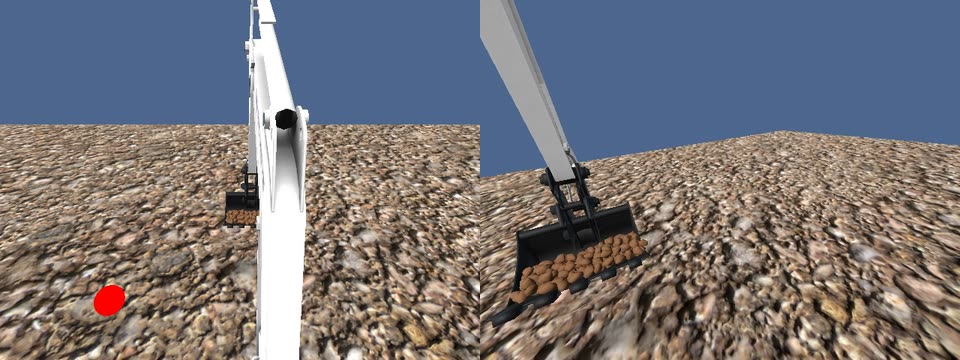
흙 7.1 → 30.4 → 31.8 kg동작 판정 4/4
GR00T · 검증 위치 네 동작 완주
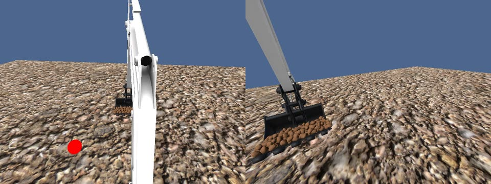
흙 8.9 → 30.3 → 32.7 kg동작 판정 4/4
π0.5 · 학습 위치 참고 · 판정 불가
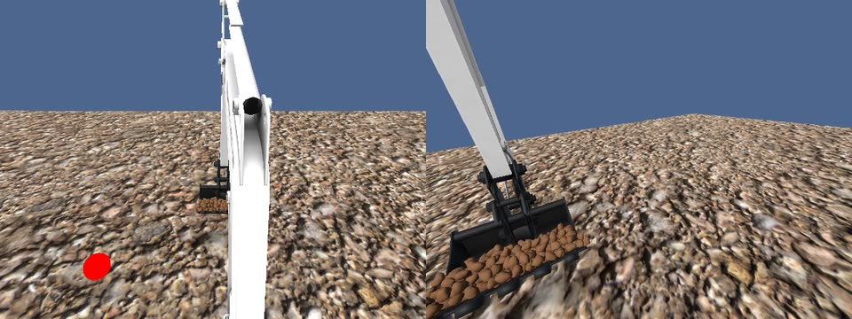
1회 완주 · 실행 시간 한도 초과판정 불가
- 왼쪽 운전석 · 오른쪽 붐 카메라 · 2배속 · 모델 구간만
- 다음 동작으로 넘기는 신호만 바깥 프로그램(모델이 스스로 전환한 것은 아님)
- 흙 30 kg 이상에서 시뮬레이터가 초당 17–70장 → 닫기·올리기 화면 기준 판정 불가 → ‘전체 시연 성공’으로는 세지 않음
- π0.5: 계산 약 0.17 s × 45회 멈춤이 실행 시간 한도(8 s)에 걸림
30
발표자 메모 · 근거
연속 굴착(11/12, 규칙 2단계 v3 실행 전 고정, π0.5 재시도는 v4 = 일시정지 응답 상한 0.1 → 0.5 s, 판정 기준 불변). 네 동작 모두 둘째 칸부터 실행.
GR00T 학습 위치: 네 동작 끝 신호 4/4, 동작 판정 4/4 통과, 시간 전환 0, 최종(화면 기준 포함) 관입·끌기 성공·닫기·올리기 화면 기준 제외, 흙 7.1 → 30.4 → 31.8 kg. GR00T 검증 위치: 4/4, 4/4 통과, 시간 전환 0, 관입 성공·끌기·닫기·올리기 화면 기준 제외, 흙 8.9 → 30.3 → 32.7 kg.
π0.5 학습 위치: 4/4·동작 판정 4/4 통과였으나 끝 시간 보정 0.61 s 부족(기준 0.3 s)으로 run 전체 판정 불가(참고로만, 결과 수치로 쓰지 않음). π0.5 검증 위치: 올리기 도중 정지(멈춤 합계 8 s 초과), 판정 불가. 이전 세션 4시도는 닫기에서 안전 정지(일시정지 응답 0.1 s 초과 3, 관측 지연 1). 메모리 문제는 아니었다(압력 최대 26 %).
규칙상 '전체 시연 성공'(네 동작 모두 최종 성공)은 두 모델 모두 아니다 — 이유는 모델 동작이 아니라 흙 30–50 kg에서의 시뮬레이터 속도와 동기 정지 누적 시간.
측정 조건: 로컬 RTX 5080, 드라이버 595.91.07, bf16, 동작당 모델 서버 1개. v4.2 이후 동기식(모델 계산 중 시뮬레이터 정지), 화면 기준은 시뮬레이터 시간으로 계산(정책 구간 초당 90장 이상·느린 1 % 프레임 60 ms 이하·사진 공백 0.3 s 이하). 모델·동작·위치당 유효 run 1개 → 위치 일반화·모델 우열을 주장하지 않는다.
근거 정리본: docs/execution/results/2026-11-12-numbers.md §2.8–§2.9, docs/execution/apex/dig-closedloop-part2-results-2026-11-12.md.
영상: 정책(모델) 구간만 잘라 재인코딩(960×360, h264), 원본 run 영상은 그대로 보존.
30. 원래 계획 대비 진행
확정 순서 0~6단계는 시뮬레이터 안에서 모두 한 바퀴 · 확장 과제는 아직 결과 없음
| 단계 | 원래 계획 | 11/12까지 결과 | 상태 |
|---|
| 0 모델 입출력 확인 | 공식 코드의 입력·출력 확인 | 구조·입출력 정리 → 굴착기 4관절 행동으로 연결 | 완료 |
| 1 LIBERO 로봇팔 추론 | 공식 가중치 실제 추론 | 두 모델 10/10 | 완료 |
| 2 버킷 이동(학습 전) | 가중치 그대로 굴착기에 적용 | 72회 중 0.5 m 도달 0회 → 학습 필요 | 완료 |
| 3 수집 환경 정비 | APEX · Isaac 재검토 | APEX 기록기·명령 경로·시뮬레이터 동기 정지 완성 · Isaac 미착수 | 일부 |
| 4 데이터 수집 | 교사 시연 → 학습 자료 | 버킷 공·콘 학습 run 32 · 굴착 흙 위치 15곳(학습 창 1,996) | 완료 |
| 5 외부 GPU 파인튜닝 | GR00T · π0.5 | 버킷 이동·굴착 모두 두 모델 학습 | 완료 |
| 6 굴착기 폐루프 재평가 | 학습 후 실제 운전 | 버킷 검증 6/6 · 시험 7/8 · 새 위치 4/8·6/8 · 굴착 동작별 3/4 · 끌기 8/8 · 연속 GR00T 2/2 | 완료 |
31
발표자 메모 · 근거
확정 실행 순서(2026-11-04 합의): 0 모델 입출력 확인 → 1 LIBERO 로봇팔 추론 → 2 굴착기 버킷 이동(학습 전) → 3 수집 환경 정비(APEX·Isaac 재검토) → 4 데이터 수집 → 5 GR00T·π0.5 외부 GPU 파인튜닝 → 6 굴착기 폐루프 재평가. 입력은 V1 RGB 다음 V2 LiDAR 그리드.
6단계 '완료'는 정해 둔 평가를 모두 실행했다는 뜻이며 목표 달성 전부를 뜻하지 않는다: 버킷 시험 위치는 변별력이 낮고, 새 위치는 높은 곳에서 움직임 크기가 부족하며, 굴착은 모델·동작·위치당 1 run, 흙 부하 구간은 화면 기준 판정 불가, π0.5 연속 굴착은 판정 불가.
'진행 중' 두 줄은 2026-11-12 착수, 결과가 없어 이 덱의 수치에 넣지 않았다.
근거 정리본: docs/execution/results/2026-11-12-numbers.md §1·§2·§4.
31. 계획서의 연구내용은 이 실험으로 채워진다
시뮬레이터 결과로 연구내용 ①~③을 채우는 중 · 실차 2단계는 대리 실험으로 범위 명시
| 계획서 연구내용 | 계획서가 요구하는 것 | 이 실험에서 나오는 것 | 보고서에 쓰는 법 |
|---|
① VLA 모델 서베이
거의 확보 | π0.5·GR00T 2종의 입출력·데이터 요구량·제로샷/퓨샷 일반화 · 야외 필드 적합성 평가 기준 | 구조·입출력 분석 · 로봇팔 실측 지연·VRAM · 굴착기 제로샷 72회 · 기존 사례 2건 · 학습 후 두 모델 같은 기준 비교 | 7축 평가표에 실측값 기입 → 2종 비교표 v2 → 기술보고서로 등록 |
② 데이터셋 설계·시범 구축
시뮬 확보 | A-O Pair 정의·동기화 표준 · Co-training 전략 · 굴착 시범 데이터셋 1종(시뮬+실환경) | APEX 추출 신호·기록기 · 버킷 이동 공·콘 학습 run 32 · 굴착 네 동작 자료(흙 위치 15곳) | 정의서 + 데이터 카드 + 품질 게이트 결과 · 실환경분은 기존 실차 로그로 보강하고 범위 명시 |
③ 모델 적용 실험
시뮬 1단계 확보 | 1단계 시뮬 사전 검증 → 2단계 실차 테스트베드 · 제로샷 성공률 · 퓨샷 향상률 · 추론 FPS · 위치 오차 | 제로샷 0/72 → 버킷 검증 6/6 · 시험 7/8 · 새 위치 4/8·6/8 · 굴착 동작별 3/4 · 끌기 8/8 · 연속 GR00T 2/2 · 추론 약 0.1초 | 지표표를 시뮬 수치로 채움 · 실차는 APEX 고충실도 대리 실험 + 섀도 모드로 쓰고 미수행 명시 · 주행 과제는 범위 밖 |
④ 중장기 로드맵
기완료 | 실험 결과에 근거한 2027 전략사업 로드맵·기획서 | 데이터 효율·전이 갭·성공률 수치 | 기존 로드맵의 성능 목표 근거에 11월 수치 연결 |
⑤ 정량 성과
준비 | 논문 1건 투고 · 기술보고서 1건 · 소프트웨어 등록 1건 | 제로샷 실패 분석 + 파인튜닝 결과 · ①의 비교 보고서 · 변환·품질검사·평가 도구 | 논문: 실패 분석+학습 효과 · 기술보고서: ① · SW 등록: APEX→LeRobot 도구 |
계획서: (붙임1) 연구개발계획서 제3장 1·2·3절(연차목표 ①~④, 표 3-3·3-4·3-8) · 수행 방법 대응: 261022 재계획 총괄표
32
발표자 메모 · 근거
계획서(연구개발계획서_이한민_ff) 제3장: 연차 목표 (1) VLA 모델 야외 필드 적합성 심층 분석 (2) 필드 데이터셋 설계 및 시범 구축 (3) 모델 적용 실험(시뮬→실환경) (4) 중장기 로드맵·전략과제 기획. 성과지표: 모델 2종 비교분석, 데이터셋 1종, Sim→Real 2단계 검증 보고서 1건; 정량: 기타 논문 1, 기술보고서 1, SW 등록 1. 표 3-8 정량 지표: 제로샷 성공률, 퓨샷 성능 향상률, 추론 속도(FPS), 위치 오차. 계획서 대상 태스크에는 굴착 외 주행(Traversal)도 있었으나 현재 실험 범위는 굴착기 팔 작업(버킷 이동→굴착)뿐이다 → 보고서에 범위 명시.
대응 원칙(261022 재계획 총괄표): 7축 필드 적합성 평가표(실시간성·자원·행동공간·관측·데이터효율·강건성·개방성)에 시뮬 실측값 기입, 2종 비교표 → 기술보고서. 데이터셋: A-O Pair 정의서·동기화 규칙·품질 검사 도구, 시뮬 v0 → 실차 로그 보강 v1. 실험: 1단계 시뮬(Isaac/APEX) + 시뮬레이터 간 전이를 실차 전이의 대리 지표로, 실차는 R4 섀도 모드(추론만, 명령 미전송) 가능 시. 로드맵: 기완료, 11월 수치 연결. 정량 성과: 논문 11/17 전 투고, SW 등록 신청, 기술보고서 등록.
현재 상태(11/12): ① 두 모델 학습 후 같은 기준 비교까지 확보, ② 버킷 이동·굴착 시뮬 데이터 확보, ③ 버킷 이동·굴착 시뮬 폐루프 결과 확보(추론 응답 중앙값 GR00T 103–109 ms, π0.5 119–122 ms), ④ 기완료, ⑤ 준비. 근거 docs/execution/results/2026-11-12-numbers.md. 볼트 경로: 01_project/2026_기본사업_자체사업_필드로봇탐색연구/계획서_보고서_발표자료/.
32. 진행 중 — 아직 결과 없음
아래 과제는 11/12 착수 · 결과가 나오면 이 덱에 추가한다
A굴착 스스로 전환지시문 하나로 모델이 관입 → 끌기 → 닫기 → 올리기를 스스로 이어 가기 · 이어진 교사 자료로 재학습 설계진행 중
B입력 2판 — 지형 격자LiDAR 높이 지도를 그림으로 넣기 · 시험 녹화 규칙 확정, 녹화 전진행 중
Cπ0.5 연속 굴착 재판정실행 시간 한도(멈춤 합계 8 s)만 조정한 규칙을 실행 전 고정 · 판정 기준은 그대로진행 중
DIsaac 재검토다른 시뮬레이터에서 같은 과제 재현미착수
33
발표자 메모 · 근거
11/11 실험 수치 마감(권고), 11/17 보고서·발표 내용 동결, 11/18 최종 발표.
A 근거 docs/execution/models/dig-self-switch-2026-11-12.md(설계안), B 근거 docs/research/2026-11-12-lidar-grid-v2-feasibility.md · docs/execution/apex/grid-v2-trial-rules-2026-11-12.md, C 근거 docs/execution/apex/dig-part2-timing-ext-2026-11-12.md · dig-closedloop-part2-rules-v5-2026-11-12.md. 세 과제 모두 이 덱 작성 시점에 결과가 없다.